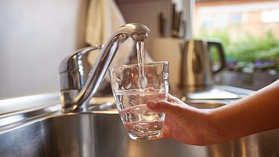

Tap Water

Description
This recipe creates a deliciously refreshing, low calorie, beverage with minimal preparation time. Even your kids will be able to make it!
Ingredients
- 1 cup of water
- 1 teaspoon water
Steps
- Place glass under tap.
- Turn tap on.
- Fill glass with water almost to top.
- Turn tap off.
- Top up glass with additional teaspoons of water until full.
- Use paper towel to mop up any spillage.
- Enjoy!
Get Back